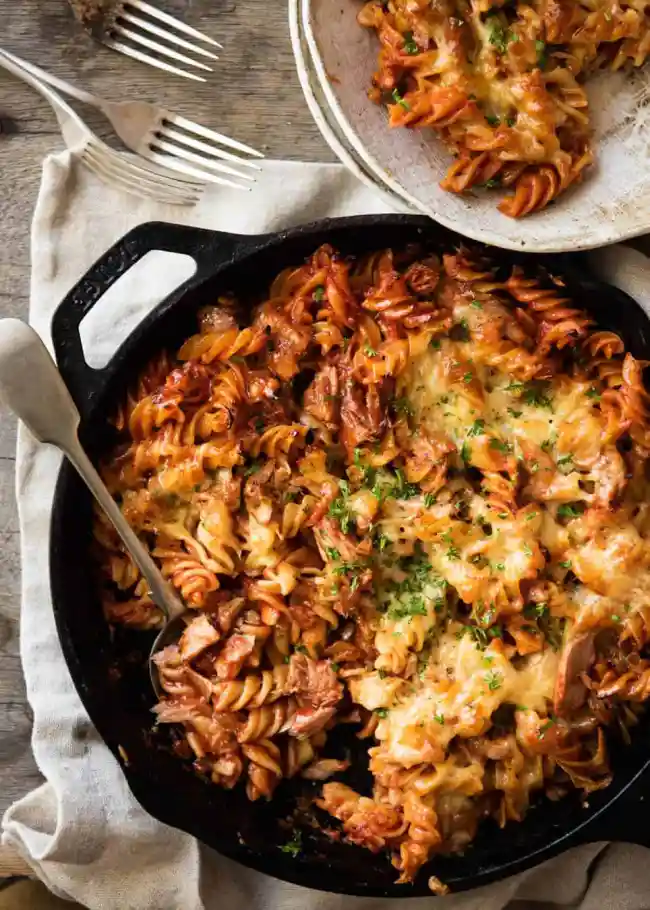

Tuna Pasta Bake

Description
When the cupboards are bare, and all you have is canned tuna, pasta and canned
tomato, you can still make a wickedly delicious dinner! Customise to your hearts
content - add vegetables, fresh herbs, chilli flakes, stir through cheese,
olives, capers, sun dried tomatoes - get creative!
Ingredients
- tbsp olive oil
- 2 garlic cloves , minced
- 1 small onion , finely diced
- 800g / 28 oz crushed tomato
- 1 tbsp tomato paste (optional, thickens sauce slightly)
- 3/4 cup (185ml) water (Note 2)
- 1 tbsp Italian mixed herbs , or other dried herbs of choice
- 1 tsp salt
- 1/2 tsp black pepper
- 425g / 15 oz can chunk tuna (preferably in oil), drained (Note 3)
- 200g / 7 oz spiral pasta (or other pasta of choice)
- 1 1/2 cups (150g) shredded mozzarella cheese (Note 4)
- Olive Oil , for drizzling
Method
- Preheat oven to 180C/350F.
- Cook pasta per packet directions, minus 1 minute. Drain, rinse under tap water to stop it sticking together, set aside.
- Meanwhile, make the sauce. Heat an ovenproof skillet over medium high heat. Add garlic and onion, cook for 3 minutes until golden.
- Add tomato, water, herbs, salt and pepper and tomato paste if using. Stir, bring to simmer, lower heat to medium and simmer energetically for 5 minutes (stir every now and then) until it thickens.
- Adjust salt to taste. Also add a touch of sugar if it tastes a bit sour (depends on quality of tomato).
- Turn the stove off, add pasta, stir in.
- Add tuna and GENTLY stir it in - don't break up the tuna so it disintegrates into mush. Leave some chunks on the surface (nice when it is golden).
- Drizzle with oil, top with cheese then bake for 20 minutes until golden and you get those nice crusty bits you see in the photos.
- Stand for 3 minutes then serve!
Back to Main page